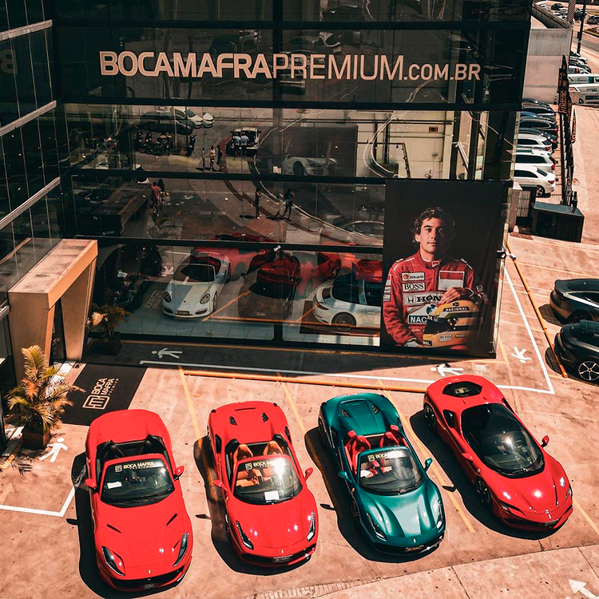

Atuante no mercado de automóveis novos e seminovos há mais de 36 anos, as revendas Bóca Mafra Automóveis
abastecem todo o Brasil com a linha de automóveis multimarcas nacionais e importados, novos e semi-novos e
veículos na linha Premium, verificados e certificados com estoque em constante renovação e excluisividade.
Oferecem garantia de fábrica de todos os veículos novos. A procedência e a credibilidade marcam a trajetória
da empresa familiar desde 1960.
A Bóca Mafra Automóveis é uma empresa familiar, que se destaca desde 1960 no mercado como sinônimo de confiança e
credibilidade. A primeira geração representada por nossos avós Selma e Ambrósio deu-se através do comércio de “secos e molhados” atendendo a demanda
de todo o Vale do Itajaí/SC. Há mais de 36 anos, Ambrósio Mafra Filho (apelidado por “BÓCA”),
quarto filho do casal, deu início ao novo segmento do negócio: fundou a BÓCA MAFRA AUTOMÓVEIS (Ambrósio Mafra & Cia) – revendedora multimarcas, de veículos novos e
seminovos. Em 29 de julho de 2000 inaugurou mais uma unidade na cidade de São João Batista fruto da significativa clientela da região do Vale do
Rio Tijucas. Em 2004 foi eleito vereador da cidade de Brusque, título este que a família atribui à credibilidade de tantos anos
no comércio. Atualmente as empresas são administradas pela terceira geração. Na qual está concentrada nos 4 filhos de Ambrósio,
as três mulheres no gerenciamento e Ambrósio Mafra NETO na diretoria da empresa. Os sócios atribuem a
integridade, transparência e a união familiar como sendo o sucesso dessa expansão. Constantemente a empresa é
marcada pelas estratégias de marketing, inovação, foco na gestão de pessoas e conexão com o consumidor.